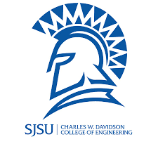
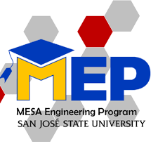
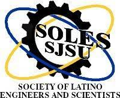
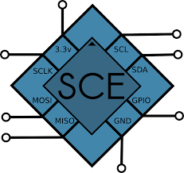

I am currently attending San Jose State Univeristy as a third year engineering student. I came to SJSU in Fall 2019 as a Computer Engineering
major. In Fall 2019 I have also declared a minor in Green Engineering, wishing I can be able to gain some skills to help this planet. I believed that the
techical advances we know today can impact inventions and projects that can help others. This is a strong reason why I wanted to bring my minor into place. I have taken over
a total of six computational courses and excited to learn more. Additioanlly, I am a first generation latina in STEM wanting to show other indivudals that it is possible
to achieve a successful career. I am very exicted to introduce myself and the past work I have done.


At San Jose State Univeristy there are over hundreds of porgrams that have pushed me to become a well rounded student. For exampe, I have joined MEP, Mesa Engineering
Program Fall 2019 and has prepared me for the professional workspace I will face in the future. Other program like SOLES, Society of Latinos in Engineering and Science are more
soley focused on Latinos. These types of prograns have set up mock interviews an resume blast. They are there to offer help to students, like me , and to guide students
to a unique path for college readiness. Furthermore, programs within your intended major like the Software and Computer Engineering society. Who are there to help
on assignments/ major projects in your major courses. I enjoy being at San Jose State University and hopefully one day become an alumni. Overall, beinga student enginner does have many resources when
needed and in the end we all know it will be worth it